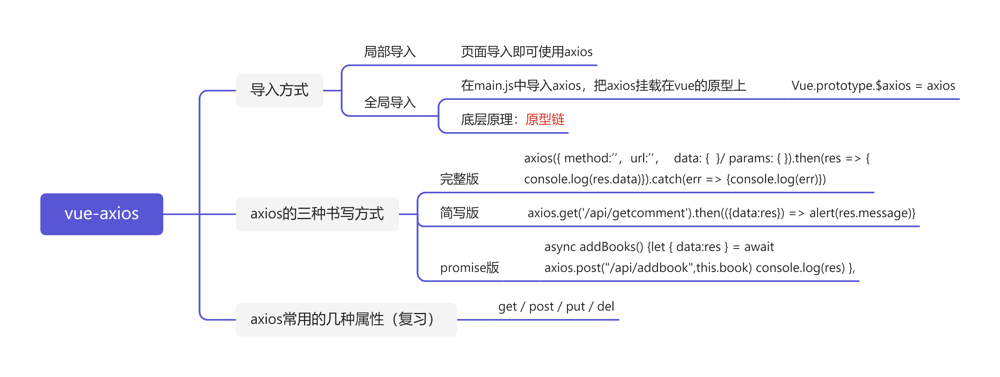

axios在使用之前一定要进行导入操作
通用版本：
x
axios({
method: '请求方式', // get post
url: '请求地址',
data: { // 拼接到请求体的参数, post请求的参数
xxx: xxx,
},
params: { // 拼接到请求行的参数, get请求的参数
xxx: xxx
}
}).then(res => {
console.log(res.data) // 后台返回的结果
}).catch(err => {
console.log(err) // 后台报错返回
})
简化版本：
x
axios.get('/api/getcomment').then(({data:res}) => alert(res.message)}
进阶版本：
x
async addBooks() {
let { data:res } = await axios.post("/api/addbook",this.book)
console.log(res)
},
方式一：即用即导，导入的页面才能使用axios
方式二：全局导入，首先需要再main.js中导入axios的包，将axios挂载在vue实例对象的原型身上
x
Vue.prototype.$axios = axios
此方法的底层原理是原型链
原理： 每一个组件都是vue实例对象，只要把数据挂载到vue的原型中，那么任何组件都可以通过原型链访问到你挂载的数据。
Q：那么为什么要叫$axios呢？
A：其实叫什么都可以，因为vue实例中的很多属性属性都是以$开头，为了代码风格一致，一般叫做$axios.
随着学习深入，你会发现vue中很多属性都是$开头
属性是一组可传入组件的值。 你通常会向组件添加属性，以传入它应显示或更改其行为的值。
可通过在 script 元素内添加 props 字段来定义组件的属性。 可以列出组件属性的名称，方式是将它们以数组形式列出：
<!-- UserDisplay component -->
<script>
export default {
name: 'UserDisplay',
props: ['name', 'age']
}
</script>
调用方可通过将值作为数组的一部分列出的方式来传入任何类型的值。 这适用于基本应用程序，但你通常需要指出希望为每个属性使用的数据类型。
定义架构可提供有关属性的更可靠的信息。 如果希望指出 name 为字符串，age 为数字，可以像下面这样定义属性架构：
<!-- UserDisplay component script -->
<script>
export default {
name: 'UserDisplay',
props: {
name: String,
age: Number
}
}
</script>